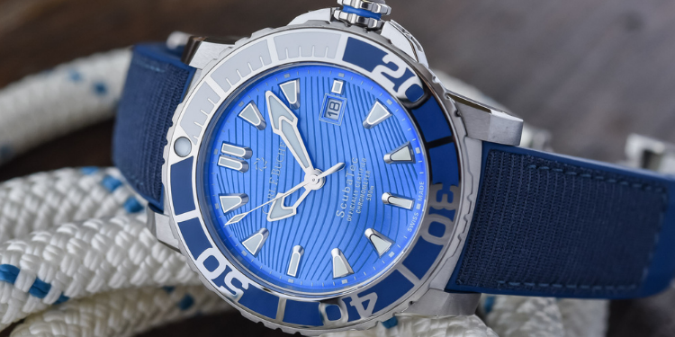

16
Jun
5 Recently Launched Luxury Dive Watches to Pick Up for Summer
Summer is synonymous with this light, carefree feeling that we’ve missed for some months, and it is time to enjoy it again! Summer is also synonymous with leisure activities and nights out, meaning that you’ll need a versatile watch that will be able to withstand sports activities and still look stylish.